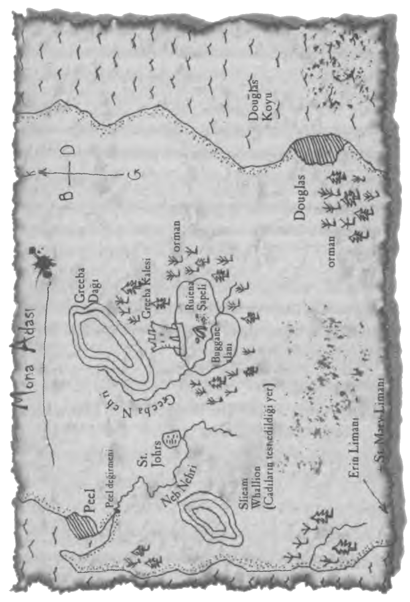

BUGGANE'NİN SALDIRISI
Her şey öyle hızlı gelişti ki neler olduğunu anlayamadım bile. İblis, son anda yana çekilerek asasıyla karşı saldırıya geçen Hayalet'i ıskaladı. Ama yavaşlayamayarak yoluna devam eden buggane son anda devasa başını çevirip sol boynuzuyla ustama bir darbe indirmeyi başararak onu yere yuvarladı. Ustam sertçe yere düşüp birkaç kez yuvarlandıktan sonra durdu.
Hareket etmiyordu. Yoksa ölmüş müydü? Eğer hâlâ hayattaysa bile birazdan ölecekti. Buggane Alice ve beni görmezden gelip geniş bir daire çizdikten sonra, keskin boynuzlarını öne eğip yerde savunmasız bir şekilde yatmakta olan ustama doğru koşmaya başladı. Kalbim duracak gibi çarpıyordu. Ustama yeniden saldıracaktı.
Bir an için hareket edemedim, ama sonra Alice bir çığlık atınca kendime gelip öne atıldım. Alice kollarını sallayarak buggane'nin dikkatini dağıtıp onu kendi üzerine çekmeye çalışıyordu.
Yaratık durup iri, kıpkırmızı ve öfke dolu bakışlarını ona çevirdi. Ve sonra saldırıya geçti!
Artık yeniden hareket edebiliyordum. Çantaları attığım gibi Alice'le bu dehşet verici yaratığın arasına girebilmek için koşmaya başladım. Koşarken bir yandan asamdaki bıçağı çıkarttım, bir yandan da yaratığın dikkatini dağıtmak için, "Buradayım!" diye bağırıyordum. "Buradayım! İstediğin kişi benim!"
Bağrışlarımı duymazdan geldiğini görünce yüreğim ağzıma geldi: Ben daha Alice'i savunabilecek bir pozisyon alamadan ona saldırmıştı bile. Dehşet verici bir an için onu ayaklarının altına aldı sandıysam da Alice'in dizlerinin üzerine çöküp son anda yana yuvarlanmayı başardığını gördüm.
Buggane yine yön değiştirdi. Bir kez daha toynaklarıyla yeri dövüp burnundan soludu. Bu kez bana bakıyordu. İstediğim olmuştu. Şimdi hedef bendim!
Kıpkırmızı gözlerini üzerime dikerek bana doğru koşmaya başladı, keskin boynuzlarıyla beni delip geçmeye hazırlanıyordu. Ama derin bir nefes alıp iyice odaklanarak benim dışımda geçen zamanın akışını yavaşlatmayı denedim. Bu, annemden bana geçmiş bir özellikti -sahip olduğumu henüz kısa bir süre önce fark ettiğim bir yetenek. Ordeen'e karşı kendimi savunabilmek için bu becerimi kullanmıştım- bana 'zamanın akışıyla alay eden bir hıza' sahip olduğumu söylemişti.
Eğer öyleyse, şu anda zamanla alay edemediğim kesindi. Bu yeteneği kullanmak kolay değildi ve o esnada tam anlamıyla kontrolüm altında olduğu söylenemezdi. Elimden geleni yaptım, ama zaman yavaşladıysa bile buggane bundan pek fazla etkilenmiş görünmüyordu. Birkaç saniye sonra üstüme atılmıştı bile ve yana çekilip tek dizimin üzerine eğilirken sağ boynuzu başımı kıl payı ıskaladı.
Buggane tekrar saldırıya geçmeden önce güç bela ayağa kalkabildim. Bu kez başını iki yana sallayarak boynuzlarını savurdu. Fakat ben bunu yapacağını önceden kestirdiğimden yana atlayıp kurtularak asamı batırmayı başarabildim. Bıçak kulağının hemen altını kesti ve yaratık tekrar saldırıya geçmek üzere bana doğru dönerken acı içinde bağırarak hafifçe sendeledi.
Gümüş bıçak ona acı vermişti. İblis, worme biçimini almış olsaydı kalın pulları yüzünden onu öldürmek çok güç olurdu, oysa şimdi bıçağımı kalbine saplayıp bu işe bir son verme fırsatım vardı. Kendime olan güvenim arttı ve daha iyi odaklanabilmeye başladım.
Odaklan! Zamanı sıkıştır. Yavaşlat. Durmasını sağla!
İşe yarıyordu. Buggane sahiden de yavaşlıyor gibi görünüyordu. Öncesinde bacakları bulanık görünürken şimdi her birinin hareketini ayrı ayrı seçebiliyordum. Asamın uzanabileceği mesafeye geldiğinde neredeyse zamanın içinde donup kalmıştı, soluğu hareketsiz bir buluta, kırmızı gözleriyse cama benziyordu. Bu fırsatı kaçırmayarak yana çekildim, onu sırtından bıçaklayarak kalbine ulaşabilmek için asamı havaya kaldırdım. Artık neredeyse tamamen hareketsizdi. Başarmıştım; zamanı durdurabilmiştim! Tek bir bıçak darbesiyle ecinninin sonu gelecekti. Asamı hızla aşağı indirdim ama şaşkınlık içinde önümde yalnızca boşluk olduğunu gördüm.
Buggane ortadan kaybolmuştu!
Yaşadığım bu şaşkınlık konsantrasyonumu bozunca zaman üzerindeki etkimi kaybettim. Rüzgârı bir kez daha yüzümde hissetmeye, dalların arasındaki uğultusunu duymaya başladım; ay bir kez daha bulutların arkasında gözden kaybolmadan önce toprakta çeşitli gölgeler oluşturdu.
Orada öylece durup bu zorlu mücadeleden sonra soluklanmayı bekledim. Acaba yaratık yeniden belirecek miydi? Onu yaralamıştım ama çok ciddi sayılmazdı. Belki de zamana müdahale etmeye çalıştığımı hissederek nasıl bir tehdit oluşturduğumu anlamıştı. Acaba geri gelecek miydi, daha tehlikeli bir biçime bürünerek? Yoksa ruh biçiminde fısıldayarak animamı emmeye mi çalışacaktı?
Dönüp ustama baktım. Hâlâ hareket etmiyordu. Acaba yarası ne kadar ağırdı? Tam o sırada etrafta Alice'e dair en ufak bir iz olmadığını fark ettim.
"Alice! Alice!" diye seslendiysem de yanıt alamadım. Kalbim korkudan sıkıştı. Yoksa şaman onu yakalamış mıydı?
Bir kez daha, "Alice!" diye bağırdım çaresizlik içinde. Aldığım tek yanıt Hayalet'ten gelen homurtular oldu, ben de durumu nasıl diye bakmak üzere yanına gittim.
Yanma eğilirken acı içinde homurdanarak doğruldu. "Hadi, ayağa kalkmama yardım et evlat..."
Asamı yere bırakıp yerden kalkmasına yardımcı oldum.
"Ne durumdasınız?" diye sordum endişeli bir şekilde. Üzerinde kan izi yoktu ama beti benzi atmıştı.
"Neyse ki boynuzun ucu beni ıskaladı, ama omzuma aldığım sert darbe beni bayıltmaya yetti. Yaşayacağım. Ancak bir süre baş ağrısı ve yara berelerle idare etmem gerekecek. Ne oldu?"
Ona buggane ile dövüşmemden ve yaratığın aniden ortadan kayboluverişinden bahsettim. "Ama Alice kayıp," diye devam ettim. "Siz bayıldıktan sonra buggane tekrar saldırıya geçmeye hazırlanırken Alice onun dikkatini dağıttı. Hayatınızı kurtardı. Bu onu son görüşüm oldu. Belki de şaman onu yakalamıştır, İblis'in yanındaki şamandı değil mi?"
"Büyük olasılıkla öyleydi evlat; özellikle de bu şekilde ortadan kaybolduğuna göre. Ama kız için endişelenme. Kendine dikkat edebilir. Eğer azıcık mantığı varsa buggane ile arasına epey mesafe koyar. Biz de öyle yapmalıyız."
"Peki ya şaman onu buggane'e yem ederse?"
Hayalet yanıt vermedi, fakat her ikimiz de bunun bir olasılık olduğunun farkındaydık. Ne de olsa insanat Alice'i koklayarak içinde Karanlık olduğunu görmüştü. Fakat dehşete kapılmamı sağlayan çok daha acil başka bir durum vardı. Alice artık kan kabının korumasından uzaktaydı.
Hayalet'in olası risklere karşı yaptığı uyarılara rağmen çevreyi arama konusunda ısrar ettim ama hiçbir şey bulamayınca vazgeçmek zorunda kaldım.
Alice için korkuyordum. Ustamın peşi sıra yola koyulduğumda boğazıma bir şeyler düğümlenmişti. Şeytan her an ortaya çıkarak öcünü alabilirdi. Alice'i öldürüp ruhunu sonsuza dek karanlığa hapsedebilirdi.
Kampa döndüğümüzde aklım Alice'te olduğundan uyumam imkânsızdı. Şafak asla sökmeyecek sandıysam da en sonunda sabah oldu. Üstelik içinde bulunduğum ruh haline hiç uygun olmayan bir şekilde son derece güneşli ve güzel bir sabahtı.
Gün kötü başladı. Uyanıp da kalkar kalkmaz köpeklerin kayıp olduğunu fark ettim. Pençe, Kan ve Kemik'ten eser yoktu, tüm seslenmelerim yanıtsız kaldı. Son derece itaatkâr olduklarından bu kadar uzun bir süre uzaklaşmış olmaları tuhaftı. Yoksa bunu da şaman mı yapmıştı?
Doğru düzgün kahvaltı etmedik, sadece bir lokma peynir yedik. Herkes karamsar bir ruh halindeydi ve özellikle Simon Sulby her geçen günle birlikte Adriana'nın içinde bulunduğu tehlike arttığından çaresizlik içinde bir şeyler yapmak istiyordu.
"Böylece burada oturamam!" dedi acı içinde. "Ya bu gece de başaramazsanız?"
"Hiçbir garanti veremem," diye yanıtladı Hayalet, sinirlendiği çok belliydi, "ama tek bir şey söyleyeceğim: Aptalca hareket edip onu kaleden tek başına kurtarmaya kalkışırsan zindana atılıp buggane'e verilmeyi bekleyen bir sonraki kişi olursun!"
"Adriana'yı kurtarma şansım çok az olabilir ama yapmak istediğim başka bir şey daha var. St. Johns'a gidip Tynwald'dan yardım isteyebilirim."
"Tynwald mı?" diye sordum. "Adanın İdari Konseyi değil mi bu?"
Simon başını iki yana salladı. "Hayır, bu Parlamento, yani seçilmiş bir kitle. Konseyi görevlendiriyorlar ve alınan kararları geçersiz kılma yetkisine sahipler. Birkaç gün içinde St. Johns'ta -seni hapse attıkları cadı kulesinin olduğu köyde- toplanacak. Tynwald, Lord Barrule'den Adriana'yı serbest bırakmasını isteyebilir."
"Peki, seni dinlerler mi?"
"Dinleyeceklerdir, tabii Konsey yetkilendirildikten sonra nadiren karışıyorlar. Ama başka ne yapabilirim ki? Vatandaşların Tynwald'da konuşma hakları var. Adriana cadı değil ve asla da olmadı. Kuşlarla iletişim kurabiliyor; hepsi bu. Bu özel bir yetenek ve kimilerini endişelendiriyor. Neden her şey böyle olmak zorunda? Neden Barrule gibi insanlar hayatı başkaları için bu kadar zorlaştırıyor? Adriana ve benim tek isteğimiz evlenmek, çocuk yapmak ve mutlu olmaktı. Çok şey mi istiyoruz? Bildiğim tek bir şey var: O olmazsa hayatım sona erer, onsuz yaşayamam."
Hayalet bir süre üzüntü içinde başını iki yana salladı. En sonunda, "Bak," diye söze girdi, "bana sadece bir gece daha ver. Eğer buggane'i bu akşam haklayabilirsek onu en azından şimdilik tehlikeden kurtarmış oluruz."
Simon yanıt vermedi. İkna olmuşa benzemiyordu.
"Sizce Alice'i şaman mı yakaladı?" diye sordum ustama. Simon için üzülüyor, Adriana içinse endişeleniyordum; fakat Alice'in durumu her şeyden önce geliyordu.
"Olabilir evlat. Kara büyü kullanarak onu bir şekilde kaçırmış olabilir, fakat onu fiziksel olarak taşımış olmasına imkân yok. Çünkü dün akşam fiziksel olarak burada değildi. O sayede bir anda ortadan yok oluverdi. Şamanlar ruhlarını bedenlerinden uzağa gönderebilir ve onu görebilme becerisine sahip bizim gibilere sanki kendisiymiş gibi görünür. Köpeklerse ayrı bir konu. Dediğim gibi, hayvanlar üzerinde özel bir etkisi var. Bill Arkwright onları son derece iyi eğitmişti ve bu şekilde ortadan kaybolmak normalde yapacakları bir şey değil."
"Birkaç şey almak için St. Johns'a gitmek istiyorum," diye araya girdi Kaptan Baines, "hem belki neler olup bittiğini de öğrenebilirim."
Çok geçmeden gitti ve tüm ikna etme çabalarımıza rağmen Simon da kalacak yer ve uygun bir iş bulabilmek üzere St. Johns'a doğru yola koyuldu. Fakat gitmeden önce bize bir harita çizdi. Haritanın üzerinde Greeba Kalesi'ni, şapel yıkıntısını ve Douglas'ı işaretledi. Aynı zamanda adanın batı kıyısında ufak bir kasaba olan Peel'i de belirterek Adriana'nın ailesiyle birlikte yaşadığı değirmeni işaretledi.
Haritayı dikkatlice inceleyip ezberledim.

Gün batımında kaptan hâlâ dönmeyince endişelenmeye başladık. Onu geciktiren şey ne olabilirdi?
Buggane'e karşı daha rahat mücadele edebilmek için çantalarımızı sakladık. Tuz ve demir bu ecinniye karşı faydasızdı, yine de onu kısa bir süreliğine de olsa bağlayıp asalarımızdaki gümüş alaşımlı bıçaklarla işini bitirmek için vakit kazanmamızı sağlayabilecek gümüş zincirlerimizi yanımıza aldık.
Hava kararmaya başlarken bir kez daha şapel yıkıntısına doğru yürümeye başladık. Dün gece işler kötü gitmişti ve bu kez de daha iyisini yapabileceğimizi sanmıyordum. Buggane tehlikeliydi ve şaman gibi çok güçlü bir müttefiki vardı.
Henüz fazla ilerleyememişken uzaktan köpek havlamaları duyduk. Bir an için yine izci köpeklerin peşimize takıldığından korktuysak da çok geçmeden rahatladık. İki kez kanacak değildim.
"Bunlar Bill Arkwright'ın köpekleri," dedim Hayalet'e. "Geri geliyorlar."
Aniden uzaktaki köpekler sanki avlarının kokusunu almış gibi ulumaya başladılar.
"Evet evlat, ama yalnız değiller!" diye bağırdı ustam.
Köpekler bize doğru koşuyorlardı ve peşlerinde yirmi hatta belki daha fazla sayıda silahlı adam vardı.
"Kaç evlat!"
Koşabildiğimiz kadar hızla kaçmaya başladık, sert otların üzerinde uçarcasına ilerliyorduk ama aramızdaki mesafeyi açmayı başaramamıştık.
"Ayrılalım!" diye bağırdı Hayalet. "Onları da ayıralım, belki ikimizi aynı anda yakalayamazlar!"
Dediğini yaparak sola döndüm, o da sağa doğru koşmaya devam etti. İçimizden birinin yakalanması yeterince kötüydü, önerisi kesinlikle mantıklıydı.
Birkaç dakika boyunca koşmaya devam ettim ve köpek sesleri uzaklaştı. Ne var ki tam izimi kaybettirdiğimi düşünürken hemen arkamdan gelen tek bir havlama duydum. Dönüp baktığımda Pençe'nin giderek yaklaşmakta olduğunu gördüm. Onun arkasındaysa eli sopalı yarım düzine kadar adam vardı. Adamlar arayı kapayamıyordu fakat köpek giderek yaklaşıyordu.
Bir ot yığınına ayağım takılınca yere yuvarlansam da hemen kalkıp koşmaya devam ettim. Fakat henüz düştüğüm yerden uzaklaşamadan Pençe üzerime atlayıp dişlerini topuğumun hemen üzerinden pantolonuma geçiriverdi.
"Bırak Pençe! Bırak!" diye bağırmama rağmen hırlayıp bacağımı sanki bir fareymiş gibi sallamaya devam etti.
Böyle davrandığına inanamıyordum. Bill Arkwright'ın sözünü daima dinlemiş ve bir keresinde su cadısı Morwena beni yakaladığında hayatımı kurtarmışlardı. Bill'in ölümünden bu yana onları kendi köpeğim gibi görüyordum. Şaman onları bana bu şekilde düşman etmeyi nasıl başarmıştı? Pençe sanki farklı bir hayvandı.
Cüsseli ve güçlü bir kurttu ve kurtulmamın tek yolu ona asamla sertçe vurmaktı; tabii bu bile yeterli olmayabilirdi. Kolumu kaldırdım ama duraksadım... Bunu bir türlü yapamıyordum. Ve sonra artık çok geçti. En önde koşan iri kıyım bir yeomen askeri üzerime çullandı.
Sopasını başıma doğru savurdu. Asamı köpek yerine onun üzerinde kullandım ve hırıldayarak ayaklarımın dibine yığıldı. Saldıran ikinci askeri de etkisiz hale getirdikten sonra çevrem sarıldı. Sonra olanlarsa çok kötüydü. Pençe dişlerini pantolonumdan ayırıp ayak bileğimi yakaladı. Dişlerinin etime geçtiğini hissettim. Bu davranışı karşısında hissettiklerim fiziksel acıdan çok daha kötüydü. Ardından başıma aldığım bir darbeyle kendimi dizlerimin üzerinde buldum ve asam yere düştü. Darbeler üst üste geldi; içlerinden biri karnıma tekme atınca nefes alabilmek için iki büklüm oldum.
Sertçe ayağa kaldırıldım, ellerim arkadan bağlandı ve ite kaka ağaçların arasında ilerletilmeye başladım. Ara sıra arkamdan biri sırtıma ya da bacaklarıma tekme savuruyordu. Bu yeterince kötüydü zaten. Çok geçmeden ağaçların arasından kalenin gri duvarları göründü. Beni nereye götürdüklerini biliyordum; buggane'e yem olmak üzere zindana atılacaktım.
Greeba Kalesi'nin etrafında, içi bulanık suyla dolu geniş bir hendek vardı, fakat çekme köprüsü olan Malkin Kulesi'nin aksine burada, dış duvardan çok az yüksek iki destek yapının arasında kalan ahşap bir rampa ve metal bir kale kapısı vardı. Kapının açılmasını beklerken vücuduma tekme ve yumruklar inmeye devam ediyordu.
İçeri girince, duvarların binalarla dolu döşeme taşlı bir alanı çevrelediğini gördüm. Bir başka giriş kapısının koruduğu uzun kule alanın tam ortasındaydı. Elleri meşaleli iki yeomen askeri beni metal parmaklıklar boyunca sürükledikten sonra döne döne alçalan merdivenlerden indirip yarım düzine kadar adamın yemek yediği geri kalanlarınsa postallarını temizleyip zırhlarını cilaladığı bir nöbetçi koğuşuna götürdüler.
Adamların tam karşısındaki kapıdan geçtikten sonra daha başka basamaklardan nemli karanlığa doğru inmeye devam ettik. En sonunda su dolu dar bir koridora vardık, bastığımız yer çamur içindeydi. Bir ara duvar boyunca su aktığını gördüm. Hendeğin altından güneye doğru ilerleyerek buggane'nin bölgesindeki zindanlara doğru ilerlediğimizi düşünüyordum. Arada sırada sağa ya da sola uzanan başka koridorlar da vardı.
Tynwald cadı kulesinde diğer tutsaklar ve Adriana ile birlikte tutulduğumuz zindana benzer bir başka zindanda tutulacağımızı bekliyordum. Fakat daracık hücreleri geçip ilerlemeye devam ettik. Ne ses ne de bir hareket olduğundan hücrelerin dolu olup olmadığını kestirmek imkânsızdı. Yeomen askerlerinden biri en uçtaki zindanlardan birinin kapısını açıp bileklerimdeki ipi kestikten sonra beni içeri ittirdi. Metal kapı gürültüyle kapanınca kendimi zifiri karanlığın içinde buldum.
Ayak seslerinin uzaklaşmasını bekledikten sonra cebimden mumla çıra kutusunu çıkardım. Bunları daima yanımda taşırım çünkü hayaletler genellikle hava karardıktan sonra yahut yer altı zindanlarında çalışır. Kan kabını da kontrol edip sağlam durumda olduğunu görünce rahatladım. Fakat zavallı Alice kabın koruma alanının dışındaydı. Şeytan söz konusu olduğunda başına gelebilecekleri düşünmek dahi istemiyordum.
Şaşırtıcı bir şekilde üzerim aranmadığından gümüş zincirim hâlâ yanımdaydı. Tabii hayat enerjimi emmek üzere ruh formuna bürünecek buggane'e karşı pek bir işe yaramazdı.
Mumu yakmayı başarınca bu yer altı zindanının beklediğimden çok daha kötü olduğunu gördüm. Üzerinde yatacak saman yığını bile yoktu. Üstelik tuhaf bir şey vardı: Duvarların üçü nemli taştan örülmüştü, fakat dördüncüsü sadece topraktı. Sıkıştırılmış toprak. Ellerimle birlikte mumun alevi de titremeye başladı, çünkü bu toprak duvarın alt kısmında karanlık bir tünel girişi vardı.
Acaba bu buggane'nin tünellerinden biri miydi? İyice eğilip içeri baktım. Arka kısmı karanlıkta tam seçilmese de yaklaşık on beş metre ileride sonlanıyor gibi görünüyordu. Acaba birileri kaçmak için tünel kazarken yakalanmış mıydı? Eğer öyleyse nöbetçiler bu tüneli neden tekrar doldurup kapatmamışlardı?
Bu zindandan başka bir şekilde de çıkabilirdim; cebimde işime yarayacak bir şey vardı: özel anahtarım. Hayalet'in erkek kardeşi Andrew tarafından yapılan bu anahtar çoğu kilidi açabiliyordu. Tabii bunu kullanmak için acele etmiyordum. Muhtemelen zindandan kolayca çıkabilirdim fakat kule girişini kontrol eden iç ve dış kapılar vardı. Bu kapıları açma mekanizmaları muhtemelen muhafızlar tarafından korunuyor olacağından kaleden kaçmak mümkün değildi.
Etrafta başka zindanlar da vardı ve Adriana da bunlardan birinde olabilirdi. Eğer Hayalet'i yakaladılarsa onu da buraya getirebilirlerdi; ama böyle bir şey olursa koridordaki seslerini duyardım, o yüzden en iyisi sabredip beklemekti. Buradan kurtulabilmek için birlikte çalışırsak şansımız daha yüksek olurdu.
Epeyce beklediysem de hiç ses duymadım. Hayalet'i yakalamışlarsa onu şimdiye kadar çoktan buraya getirmezler miydi? Belki de kaçmayı başarmıştı? En sonunda mumu daha sonra da kullanabilmek üzere söndürüp toprak zemine kıvrılarak uyumaya çalıştım. Yer soğuk ve nemli olduğundan çok geçmeden titremeye başladım. Yediğim dayaktan ötürü her tarafım yara bere içindeydi ve ağrıyordu. Çektiğim acıyı şifalı otlarıyla azaltabilecek Alice de yanımda değildi. Beni yalnızca zaman iyileştirebilirdi.
Birkaç kez uykuya dalar gibi olduysam da her seferinde sıçrayarak uyandım. Ama son uyanışımın nedeni soğuk ve rahatsızlıktan çok farklıydı.
Zemine düşen toprak parçalarının sesini duyabiliyordum. Biri ya da bir şey tünelden buraya doğru geliyordu...